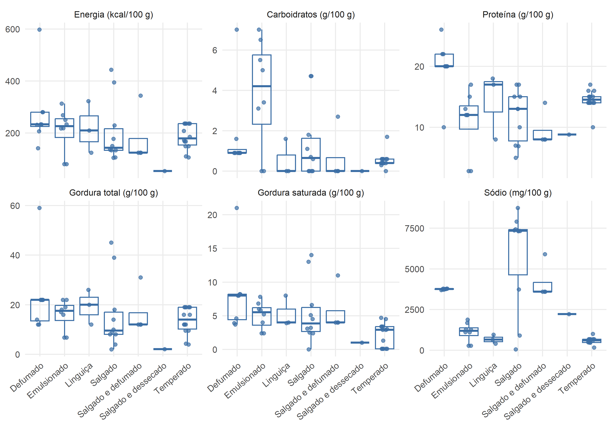
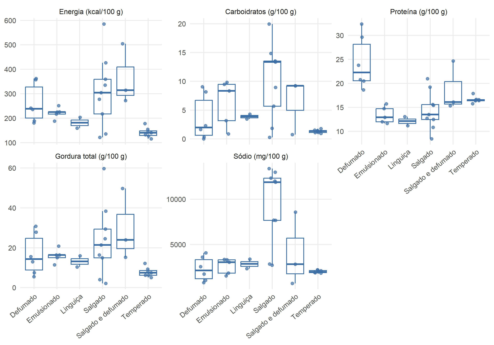

| Nutriente | Unidade | n | Média (DP) | Mediana (Q1–Q3) | Mín–Máx |
|---|---|---|---|---|---|
| Energia | kcal | 48 | 205,9 (99,9) | 207,0 (133,0–236,0) | 53,0–597,0 |
| Carboidratos | g | 48 | 1,5 (2,0) | 0,6 (0,0–1,6) | 0,0–7,0 |
| Açúcares totais | g | 39 | 0,5 (0,4) | 0,4 (0,1–0,9) | 0,0–1,9 |
| Açúcares adicionados | g | 39 | 0,5 (0,4) | 0,4 (0,1–0,9) | 0,0–1,7 |
| Proteína | g | 48 | 13,7 (5,0) | 14,0 (10,0–17,0) | 2,8–26,0 |
| Gordura total | g | 48 | 16,4 (10,6) | 15,0 (9,9–19,3) | 2,0–59,0 |
| Gordura saturada | g | 48 | 4,8 (4,0) | 4,0 (2,8–6,2) | 0,0–21,0 |
| Gordura trans | g | 48 | 0,01 (0,03) | 0,00 (0,00–0,00) | 0,00–0,20 |
| Fibra alimentar | g | 48 | 0,0 (0,1) | 0,0 (0,0–0,0) | 0,0–0,7 |
| Sódio | mg | 48 | 2627 (2537) | 1277 (638–3752) | 49–8738 |
| Nota. DP = desvio padrão; Q1–Q3 = primeiro e terceiro quartis; Mín–Máx = menor e maior valor. Unidades por 100 g do produto. | |||||
3 · Composição dos produtos
Esta página descreve a composição nutricional declarada no rótulo (todos os produtos) e medida pelo FoodScan (produtos com análise de laboratório). Todos os valores são por 100 g. A comparação entre as duas fontes está no bloco 4.
3a · Composição declarada no rótulo
Amostra: 48 produtos. Em cada nutriente, n indica os produtos com valor informado (células em branco ficam de fora).
NotaInterpretação
Pelo rótulo, as medianas por 100 g são de 207 kcal (Q1–Q3: 133 a 236) de energia, 14,0 g (Q1–Q3: 10,0 a 17,0) de proteína e 15,0 g (Q1–Q3: 9,9 a 19,3) de gordura total. Os carboidratos são muito baixos (mediana de 0,6 g (Q1–Q3: 0,0 a 1,6)), como esperado em carnes. O sódio tem enorme variação: mediana de 1277 mg (Q1–Q3: 638 a 3752), mas de 49 a 8738 mg entre os produtos; como a média (2627 mg) fica bem acima da mediana, poucos produtos com muito sódio puxam a média para cima e a mediana é a medida mais representativa. Açúcares totais e adicionados foram informados em 39 de 48 produtos; os demais ficam fora (não são contados como zero). Esta seção é descritiva: não há teste e, portanto, não há valor de p.
| Nutriente | Defumado (n = 8) | Emulsionado (n = 8) | Linguiça (n = 3) | Salgado (n = 10) | Salgado e defumado (n = 4) | Salgado e dessecado (n = 1) | Temperado (n = 14) |
|---|---|---|---|---|---|---|---|
| Energia (kcal) | 233,0 [224,8–280,0] | 225,5 [182,8–254,5] | 209,0 [166,5–265,5] | 143,0 [133,0–216,0] | 124,0 [124,0–178,8] | 53,0 [53,0–53,0] | 178,5 [153,5–236,0] |
| Carboidratos (g) | 0,9 [0,9–1,1] | 4,2 [2,3–5,8] | 0,0 [0,0–0,8] | 0,7 [0,0–1,6] | 0,0 [0,0–0,7] | 0,0 [0,0–0,0] | 0,4 [0,4–0,6] |
| Açúcares totais (g) | 0,9 [0,9–0,9] | 0,6 [0,0–1,1] | 0,0 [0,0–0,0] | 0,6 [0,0–0,6] | 0,8 [0,8–0,8] | – | 0,2 [0,2–0,4] |
| Açúcares adicionados (g) | 0,9 [0,9–0,9] | 0,5 [0,0–1,4] | 0,0 [0,0–0,0] | 0,6 [0,0–0,6] | 0,8 [0,8–0,8] | – | 0,1 [0,1–0,4] |
| Proteína (g) | 20,0 [20,0–22,0] | 12,0 [9,7–13,5] | 17,0 [12,5–17,5] | 13,0 [7,8–15,0] | 8,0 [8,0–9,5] | 8,8 [8,8–8,8] | 14,5 [14,0–15,0] |
| Gordura total (g) | 22,0 [13,5–22,0] | 17,5 [13,7–19,8] | 20,0 [16,0–23,0] | 9,6 [8,1–17,0] | 12,0 [12,0–16,8] | 2,1 [2,1–2,1] | 14,0 [10,2–19,0] |
| Gordura saturada (g) | 8,0 [4,4–8,2] | 5,5 [3,6–6,2] | 4,0 [4,0–6,0] | 3,9 [2,7–6,2] | 4,0 [4,0–5,8] | 1,0 [1,0–1,0] | 2,9 [0,1–3,4] |
| Gordura trans (g) | 0,00 [0,00–0,00] | 0,00 [0,00–0,00] | 0,00 [0,00–0,00] | 0,00 [0,00–0,00] | 0,00 [0,00–0,00] | 0,00 [0,00–0,00] | 0,00 [0,00–0,00] |
| Fibra alimentar (g) | 0,0 [0,0–0,0] | 0,0 [0,0–0,0] | 0,0 [0,0–0,0] | 0,0 [0,0–0,0] | 0,0 [0,0–0,0] | 0,2 [0,2–0,2] | 0,0 [0,0–0,2] |
| Sódio (mg) | 3752 [3737–3782] | 1195 [896–1382] | 652 [529–800] | 7334 [4628–7406] | 3594 [3594–4168] | 2220 [2220–2220] | 597 [478–673] |
| Nota. Subgrupos com poucos produtos (n pequeno) trazem estimativas muito imprecisas; leia como descrição, não como comparação. | |||||||

NotaInterpretação
Entre os subgrupos com pelo menos 3 produtos, o sódio declarado é maior em Salgado (mediana 7334) e menor em Temperado (597); a proteína é maior em Defumado (mediana 20,0) e menor em Salgado e defumado (8,0); a gordura total é maior em Defumado (mediana 22,0) e menor em Salgado (9,6). As diferenças entre subgrupos são grandes, o que é coerente com tecnologias de fabricação distintas (salga, cura, emulsão, tempero). Como não houve teste de comparação, não se afirma que a diferença seja estatisticamente significativa, e os subgrupos com 1 ou 2 produtos (como Salgado e dessecado) ficaram fora da leitura por serem pouco informativos.
3b · Composição medida no FoodScan
Amostra: 32 de 48 produtos com análise de laboratório. A energia do laboratório foi obtida convertendo o valor em kJ para kcal (kJ ÷ 4,184).
| Nutriente | Unidade | n | Média (DP) | Mediana (Q1–Q3) | Mín–Máx |
|---|---|---|---|---|---|
| Energia | kcal | 32 | 246,0 (113,7) | 221,0 (157,5–306,5) | 115,4–585,2 |
| Carboidratos | g | 32 | 5,6 (5,4) | 3,3 (1,3–9,2) | 0,0–20,0 |
| Proteína | g | 32 | 16,8 (5,2) | 15,9 (13,0–18,8) | 8,5–32,4 |
| Gordura total | g | 32 | 17,5 (13,1) | 15,1 (7,8–22,0) | 2,1–59,7 |
| Sódio | mg | 32 | 4449 (3977) | 2772 (1907–4981) | 710–13383 |
| Nota. DP = desvio padrão; Q1–Q3 = primeiro e terceiro quartis; Mín–Máx = menor e maior valor. Unidades por 100 g do produto. | |||||
NotaInterpretação
Nos 32 produtos analisados, as medianas do laboratório por 100 g são de 221 kcal (Q1–Q3: 158 a 306) de energia, 15,9 g (Q1–Q3: 13,0 a 18,8) de proteína, 15,1 g (Q1–Q3: 7,8 a 22,0) de gordura total e 3,3 g (Q1–Q3: 1,3 a 9,2) de carboidratos. O sódio tem mediana de 2772 mg (Q1–Q3: 1907 a 4981), com valores muito dispersos (710 a 13383 mg). Estes números descrevem apenas os produtos que passaram pelo FoodScan; se o rótulo concorda com o laboratório é avaliado no bloco 4, comparando os dois valores do mesmo produto. Esta seção é descritiva e não traz valor de p.
AvisoSódio do laboratório: resultados provisórios
Há valores de sódio de laboratório muito altos. Eles não foram excluídos; a checagem (unidade, digitação ou valor real) ainda está pendente, e média e DP do sódio devem ser lidos com cautela. Prefira a mediana. Detalhes no bloco 4.
| Nutriente | Defumado (n = 6) | Emulsionado (n = 5) | Linguiça (n = 2) | Salgado (n = 9) | Salgado e defumado (n = 3) | Temperado (n = 7) |
|---|---|---|---|---|---|---|
| Energia (kcal) | 238,3 [200,3–327,9] | 224,7 [217,0–225,6] | 181,1 [169,9–192,3] | 303,9 [217,2–358,9] | 314,4 [293,2–409,5] | 140,2 [129,5–148,3] |
| Carboidratos (g) | 2,0 [0,6–6,7] | 8,3 [3,2–9,5] | 3,9 [3,7–4,1] | 13,3 [5,7–13,5] | 9,2 [5,0–9,2] | 1,3 [1,1–1,5] |
| Proteína (g) | 22,3 [20,6–28,2] | 12,9 [12,0–14,7] | 12,1 [11,6–12,6] | 13,5 [12,5–15,6] | 16,1 [15,7–20,4] | 16,5 [16,4–16,6] |
| Gordura total (g) | 14,3 [8,9–24,7] | 16,3 [15,0–16,3] | 13,1 [11,7–14,5] | 21,3 [14,9–29,4] | 23,9 [19,5–36,8] | 7,4 [6,2–8,6] |
| Sódio (mg) | 2147 [1222–3341] | 3043 [1857–3317] | 2860 [2595–3125] | 11877 [7663–12323] | 2823 [1767–5702] | 1970 [1900–2143] |
| Nota. n = produtos com análise de laboratório em cada subgrupo. Com n pequeno, a mediana e os quartis são pouco informativos. | ||||||

NotaInterpretação
Pelo FoodScan, entre os subgrupos com pelo menos 3 produtos analisados, o sódio é maior em Salgado (mediana 11877) e menor em Temperado (1970); a proteína é maior em Defumado (mediana 22,3) e menor em Emulsionado (12,9); a gordura total é maior em Salgado e defumado (mediana 23,9) e menor em Temperado (7,4). Com apenas 32 produtos no total e poucos por subgrupo, esses contrastes são indicativos e não testados. O sódio do laboratório merece cuidado extra: os valores mais altos ainda não foram checados, e um subgrupo com mediana muito alta pode refletir poucos valores extremos.